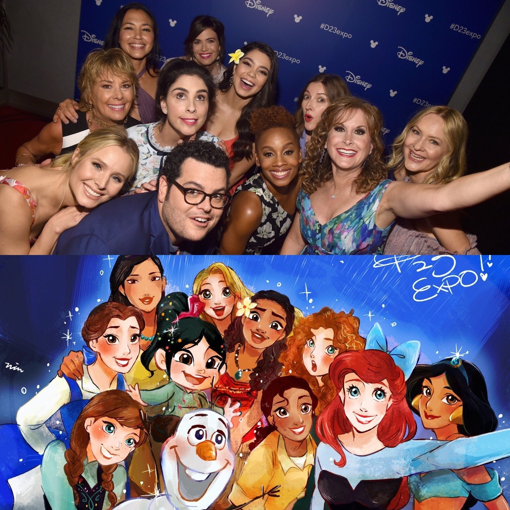

oh-that-disney-princess-emily:
Someone did the thing ğŸ˜ğŸ˜ğŸ˜
Why is jasmine white? I am concerned?…
The same reason Sarah Silverman isn’t an 11 year old or why Robin Williams wasn’t blue: VOICE ACTING.
Disney usually makes an effort to cast people of the appropriate ethnic background as voice actors, so this is actually remarkable. (Note that Tiana’s voice actress is black, Moana’s is a Pacific Islander, and Pocahontas’s is Native American.) Most of the Aladdin voice actors are white, though, and I’m not sure why; I think Middle Eastern people being parsed as nonwhite is relatively new (post-9/11)?
…I would very much assume that this boils down to “Disney does precisely what it must do to keep the mainstream happy, and character/actor ethnic matching became a thing that [certain vocal portions of] the mainstream cared about in the late 2000s, not during the height of the Disney Renaissance.”